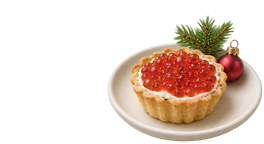
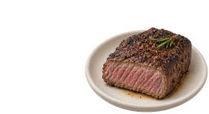
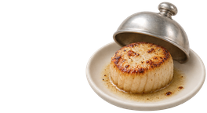
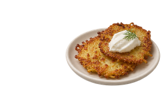
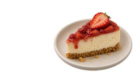

Завтра с 11:00
От 540 ₽
Университет Дружбы Народов
Повар или блюдо

Новыйгод

Проф.повара

Privatechef

Домашниеповара

Конди-теры
Сегодня с 21:00
От 540 ₽
Бибирево
Кого пускаем готовить и что проверяем перед первым заказом
Завтра с 11:00
От 540 ₽
Сокольники